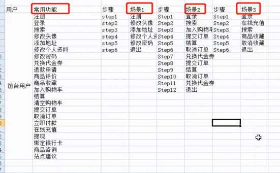
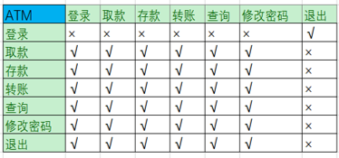
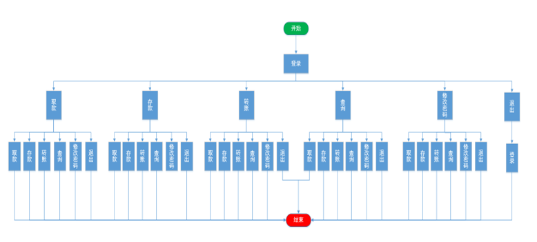
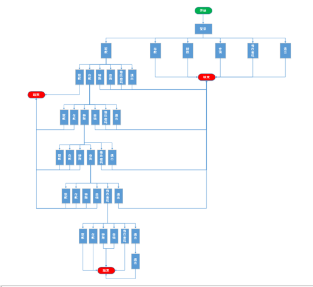

业务场景
什么是业务场景？
多个功能间组和就构成了业务场景
注册-登录-搜索-下订单这样的流程就是一个业务场景。
为什么做业务场景测试？
从客户角度
用户不可能只使用某一个功能，所以要模拟实际用户的操作。
从测试人员自身
每个测试人员只测试某一个或某几个功能模块，功能模块之间的组合并没有考虑到。
1 从用户角度设计测试用例
从用户常用功能的业务组和 测试---模拟用户行为
步骤
确定项目中角色（iwebshop为例）；
根据用户角色罗列常用功能；
根据功能点组合成常见的业务场景（每个功能至少使用一次）；
编写测试用例：一条业务场景就是一条测试用例。

适用情况：功能比较多，测试时间短，项目周期比较紧急
2 从项目本身角度设计测试用例
步骤
确定项目中功能个数；(举例：ATM机---登录、取款、存款、转账、查询、修改密码、退出)
形成N*N的矩阵；
确定功能间的可达性（可达（一步可达）√、不可达×）；
根据可达性画广度图和深度图。
编写测试用例：每一条从开始到结束的路径就是一条测试用例。

适用范围：测试周期较长的项目
3 广度图
步骤
任意选取一个功能点作为开始点；
画出该功能所有可达功能；
从左至右依次画出每个功能的可达功能；(注意：每个功能的可达功能画一次即可)
其他的功能和画过的功能直接结束即可。
画图时注意事项：
开始标记--->流程图开始符号
流程标记---->矩形框
结束标记---->流程图终止符号
对内容进行说明--->流程图文档
例：ATM机广度图

4 深度图
画深度图的步骤：
任意选取一个功能点作为开始点；
画出该功能的所有可达功能；
逐层从最左侧开始依次向下画；（注意：每个功能的可达功能画一次即可）
其他的功能和画过的功能直接结束即可。
例：ATM机深度图
